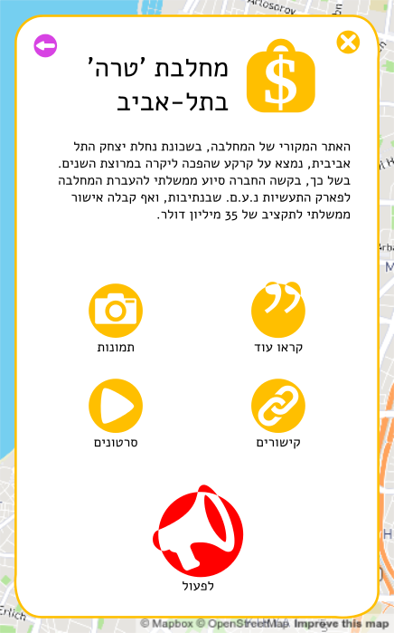

They are a nice social networks feature but they are not a real measuring tool...
after all - we do have information about # of commits, issues, pull requests...
they might be more useful when we are looking at a project
So here are some GitHub Trending information from now
Periodic System
every 6 hours:
- - scrapes the GitHub tranding page and pass projects to the scrapers
- - removes project from the DB to keep the 500 with highest Krihelimeters
- - re-analyses (re-scrape all the projects from the DB)